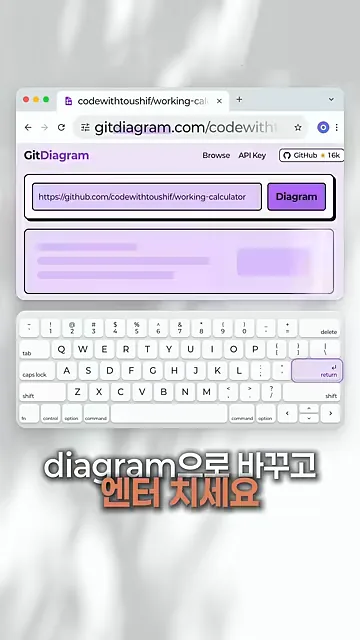
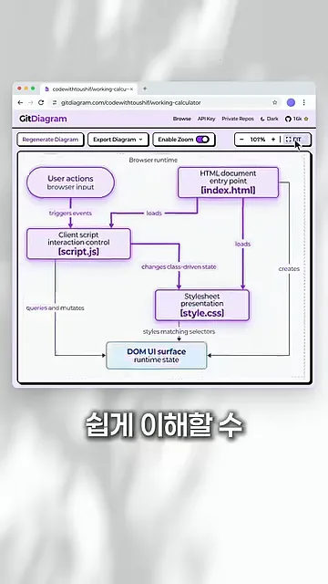
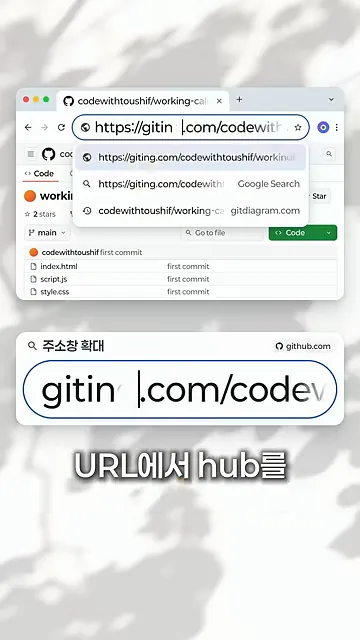
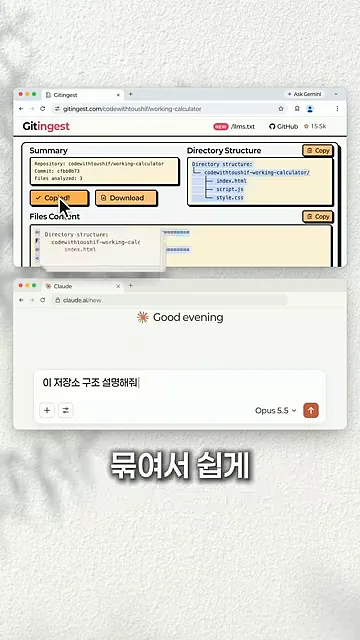

구조도로 보기: GitDiagram
남의 저장소를 처음 열면 폴더가 몇 겹씩 접혀 있어서 어디부터 읽어야 할지 막막해요. 영상이 내놓는 해법은 코드를 읽기 전에 주소창부터 고치는 거예요. 두 꿀팁 모두 GitHub 저장소 주소의 hub 한 단어만 바꿔요.
owner/repo는 그대로 두고 앞의 도메인만 바꿔요. 어느 단어로 바꾸느냐에 따라 결과물이 달라져요.첫 번째는 hub를 diagram으로 바꾸는 거예요. 영상은 파일이 index.html, script.js, style.css 세 개뿐인 계산기 저장소로 시연해요. 아래 화면에서 주소창이 gitdiagram.com/codewithtoushif/…로 바뀌어 있고, GitDiagram 입력칸에 원래 GitHub 주소가 자동으로 들어가 있어요. 키보드의 엔터 키가 강조돼 있죠.

잠시 기다리면 구조도가 완성돼요. 상자 하나가 파일이나 역할 하나예요. 맨 위의 [index.html]이 진입점이고, 사용자 입력이 [script.js]로 이벤트를 보내요. 스크립트가 클래스를 바꿔 상태를 바꾸면 [style.css]가 그 상태에 맞춰 모양을 입히고, 결과가 맨 아래 'DOM UI surface'에 그려져요. 화살표마다 'triggers events', 'loads', 'creates' 같은 관계 이름이 붙어 있어요.

AI에 넣기 좋게 묶기: Gitingest
두 번째는 저장소를 AI에 통째로 넣고 싶을 때 써요. 이번에는 hub를 ingest로 바꿔요. 아래 화면은 주소창에 gitin까지 친 순간이에요. 뒤쪽 .com/codewithtoushif/…는 그대로 두고 앞부분만 고치고 있어요.

diagram에서 ingest로 달라져요.
영상 00:14에서 보기
Gitingest 페이지는 세 칸으로 나뉘어요. 왼쪽 위 Summary에는 저장소 이름과 분석한 파일 수가, 오른쪽 위 Directory Structure에는 폴더 트리가 있어요. 아래 Files Content에는 모든 파일 내용이 이어 붙어 있어요. 파일 사이마다 FILE: style.css 같은 줄이 끼어 있어서 어디서 파일이 바뀌는지 알 수 있어요.

FILE: 줄로 표시돼요.
영상 00:16에서 보기
마지막으로 Copy all 버튼을 눌러 전체를 복사하고 Claude 채팅창에 붙여요. 영상은 입력칸에 '이 저장소 구조 설명해줘'라고 적는 장면까지 보여 줘요. 파일을 하나씩 열어 복사할 필요 없이, 한 번 붙여 넣는 것으로 AI가 저장소 전체를 보고 답할 수 있어요.

두 꿀팁을 나란히 놓으면 이래요. 바꾸는 단어 하나로 결과물과 쓰임새가 갈려요.
| 바꾸는 단어 | 열리는 서비스 | 나오는 것 | 언제 쓰나요 |
|---|---|---|---|
hub → diagram | GitDiagram | 파일 사이 관계를 그린 구조도 | 코드가 어떻게 돌아가는지 눈으로 먼저 보고 싶을 때 |
hub → ingest | Gitingest | 요약, 폴더 트리, 전체 코드를 묶은 텍스트 | 저장소를 통째로 AI에 넣고 물어보고 싶을 때 |